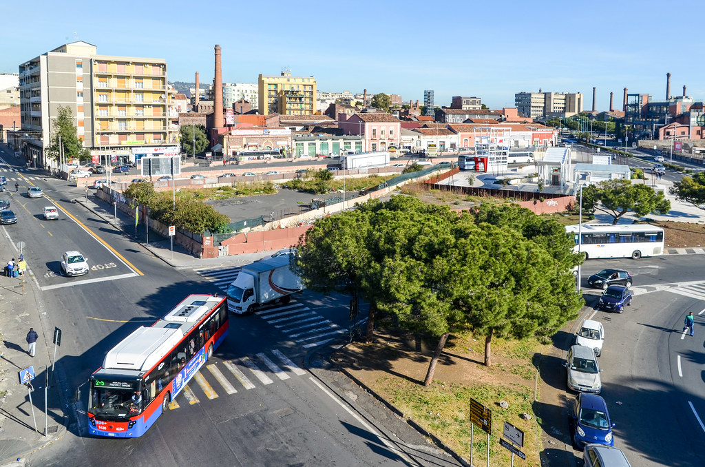

Piazza Duomo – Catania

Contesto urbano e monumentale
Piazza Duomo rappresenta il cuore pulsante di Catania e uno degli esempi più significativi di urbanistica barocca in Sicilia. La piazza si configura come un ampio spazio scenografico che mette in relazione edifici di straordinaria rilevanza architettonica e storica.
Storia e ricostruzione barocca
Dopo il devastante terremoto del 1693, la piazza fu completamente ridisegnata seguendo i canoni del barocco siciliano. L'intervento coordinato di architetti come Giovanni Battista Vaccarini ha dato vita a uno spazio urbano di eccezionale valore artistico, caratterizzato da proporzioni armoniche e ricchezza decorativa.
Elementi architettonici principali
La Cattedrale di Sant'Agata domina il lato orientale della piazza, mentre al centro si erge la Fontana dell'Elefante (U Liotru), simbolo della città. Il Palazzo degli Elefanti (sede del Comune) e il Palazzo dei Chierici completano il quadro monumentale, creando un ensemble di rara coerenza stilistica.
Caratteristiche distintive
- Fontana dell'Elefante, simbolo cittadino realizzato in pietra lavica
- Cattedrale di Sant'Agata con imponente facciata barocca
- Pavimentazione in pietra lavica bianca e nera a motivi geometrici
- Palazzo degli Elefanti, sede del Municipio
- Fontana dell'Amenano con caratteristica cascata d'acqua
- Accesso diretto al mercato storico della pescheria
Ruolo urbano contemporaneo
Oggi Piazza Duomo continua a essere il principale punto di riferimento della vita cittadina, ospitando eventi culturali, celebrazioni religiose e rappresentando il luogo d'incontro privilegiato per residenti e visitatori.